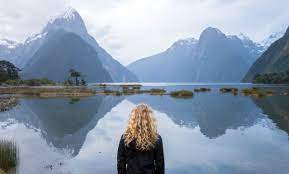
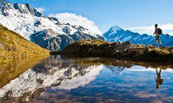

----------HISTORIA DE EL HIMNO NACIONAL----------
https://promocionmusical.es/himnos-nacionales/himno-de-nueva-zelanda/#:~:text=Historia%20del%20Himno%20de%20Nueva%20Zelanda,-El%20Himno%20Nacional&te
Da click para escuchar su himno nacional
---------PIB NACIONAL (PER CAPITA)--------- Estadísticas relacionadas: Nueva Zelanda/Producto interior bruto PBI per cápit :Población: Tasa de crecimiento del PIB: ¿Cuál es el IDH de Nueva Zelanda?
https://datosmacro.expansion.com/pib/nueva-zelanda
-----LOS MAORIES DE NUEVA ZELANDA-----
El idioma maorí fue llevado a Nueva Zelanda por polinesios que se presume vivían en el área de Tahití, los cuales probablemente llegaron en canoas dobles.
Hacia 2004, el uso de muchos de los dialectos menores habían disminuido casi hasta la extinción, los estudiantes más nuevos y los hablantes tradicionales utilizaban los estándares oficiales o el maorí de televisión. Sin embargo, las variantes regionales están todavía presentes en diferentes sitios Web y hasta entre hablantes y subtituladores de la televisión maorí.
La llegada a las islas significó un cambio cultural de pueblo marino del trópico a pueblo cazador de clima templado, con escasos recursos alimenticios: animales domésticos y cultivos tropicales, adaptables al nuevo clima. Antes de la llegada de las primeras personas, el 80% de la tierra estaba cubierto por bosques existiendo praderas y estepas de tipo tussok en el tercio occidental de la Isla Sur, más exactamente en las Planicies de Canterbury.
Es probable que los antiguos peruanos comerciaran con los polinesios de las Marquesas u otras islas, lo que puede explicar que el camote (Ipomoea batatas), planta americana, llegara tempranamente hasta Nueva Zelanda.
Las moas y otras aves autóctonas que eran cazadas por los maoríes, se extinguieron alrededor del año 1500 relativamente poco después de su llegada. Facilitó su extinción su baja reproducción, ya que no se dio una suficiente tasa de reposición ante el ritmo con el que eran cazados, sin embargo algunos opinan que existieron pequeños grupos de moas hasta fines del siglo XVIII o hasta inicios del siglo XIX. Se cuenta algún avistamiento por parte de marineros a las órdenes de James Cook y llaman la atención el estado de conservación de algunas plumas de estas aves.
https://www.mochileandoporelmundo.com/maories-cultura-maori-de-nueva-zelanda/
Da Click en los banners para mas información

